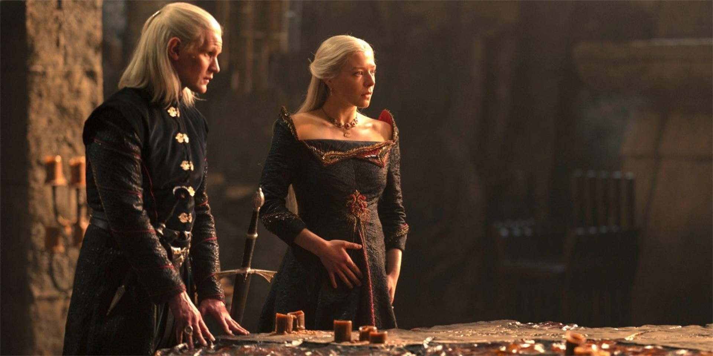
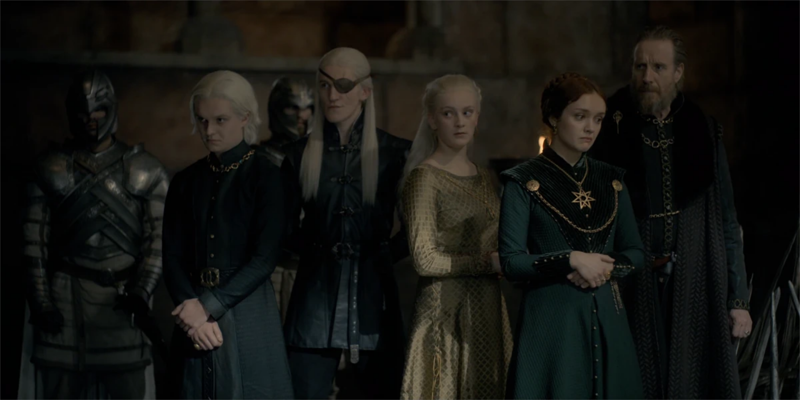
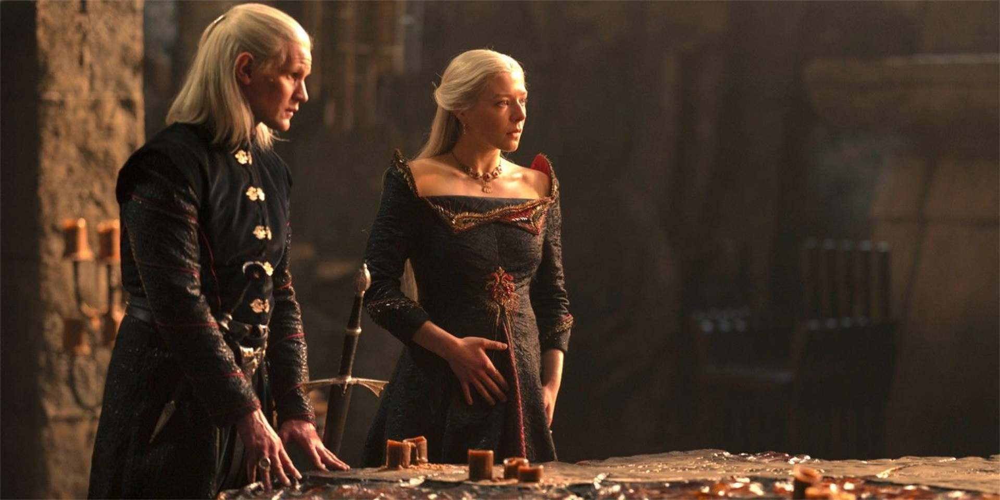
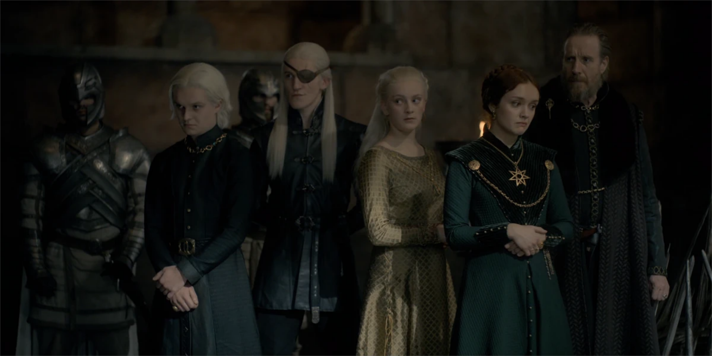
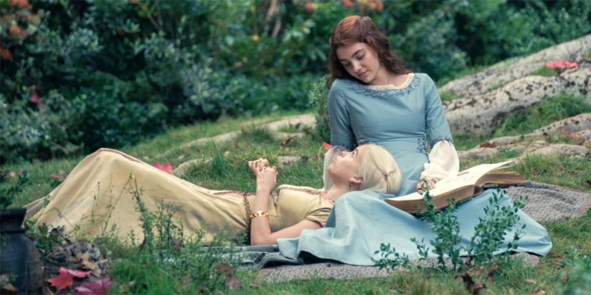
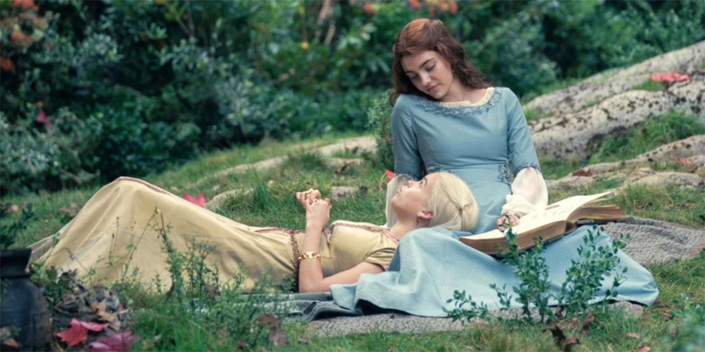

A prequel to Game of Thrones and based on Martin's 2018 novel Fire & Blood, the series is set about 100 years after the Seven Kingdoms are united by the Targaryen Conquest, nearly 200 years before the events of Game of Thrones, and 172 years before the birth of Daenerys Targaryen. Featuring an ensemble cast, the show portrays the events leading up to the beginning of the decline of House Targaryen, a devastating war of succession known as the "Dance of the Dragons".

 



 
